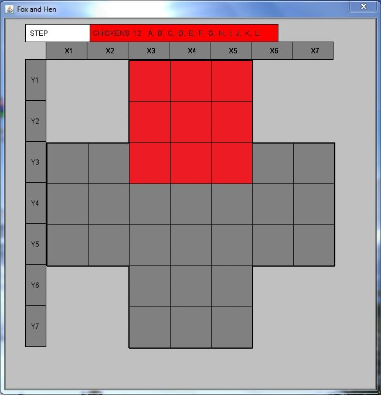
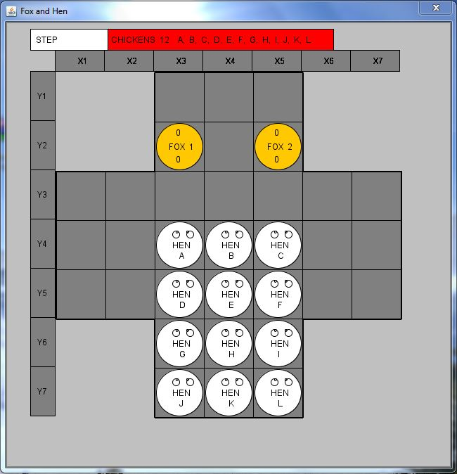

Technologies used in project: Java SE, Swing.
How to play 2 player or with computer in the game Foxes and Hens. The 2 Foxes and 12 Hens variant is popular in German speaking countries like Germany, Austria, Switzerland.
Hens can move one step up, left or right, but not backward and not diagonally. Foxes can also move only one step, but also up as well as down, and to the left and to the right. A fox can eat a hen like in a checker game: if a free field follows the horizontal or vertical direction behind a hen, the fox jumps over the hen to a free field and takes it. In this case, the trophies are added up. Foxes are always obliged to eat hens, and are required to carry out the longest eating. If two meals are the same length, one of them is carried out at the choice of the fox.
Empty board:
where the hens are trying to get to red fields
In the programmed version, the computer plays as a fox. You move the hens. Partners play in turn, and the hens begin. They win the game, and if nine of them manage to occupy 9 fields, they form the upper square of the game (the square, the lower corners of which are occupied by foxes). The initial position of hens and foxes is shown in the image.
Initial Setup:
Hens win also if they manage to block the fox. Foxes win if they manage to eat 4 hens, since then the remaining hens are not enough to occupy the top 9 fields. It is necessary that at each turn the program searches for the longest possible path of eating for foxes and does it, and if he is the only one. If there are two such paths, then one of them must be selected. If they are not there at all, then the method of action is to see if any movement of the fox will allow it to be put in a state of possible eating. If such a move exists, then why not make it, this will cause the hens to react. If there is no such threatening move, then there is little choice.
SOURCE CODE
Download: FoxesandHens.rar